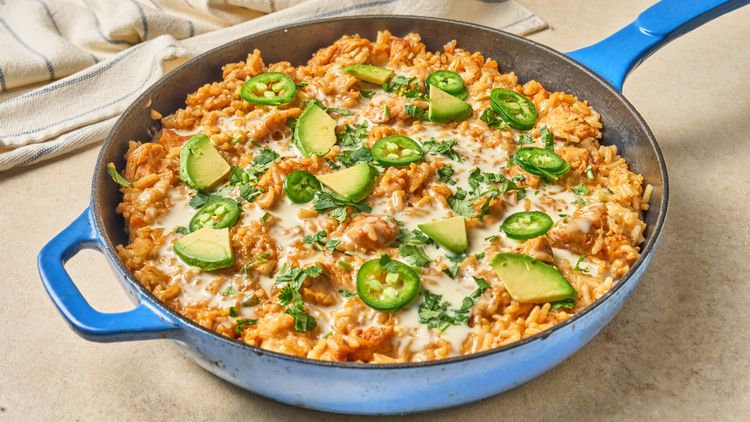

One Pan Happy Plate (Queso Chicken and Rice)

Description
This one pan happy plate is a Mexican-inspired queso chicken and rice dish that really does make everyone happy. Simmered in a skillet, and topped with warm queso and taco toppings, this is an easy, family-friendly dinner.
Ingredients
- 1 tablespoon olive oil
- 1 ½ pounds skinless, boneless chicken breasts or thighs, cut into 1 ½-inch pieces
- 1 teaspoon garlic powder, or to taste
- salt and freshly ground black pepper to taste
- 1/2 yellow or white onion, finely chopped
- 1 tablespoon butter
- 1 ½ cups uncooked long-grain white rice
- 1 (1-ounce) packet taco seasoning (such as Old El Paso®)
- 2 ¾ cups water, or as needed
- 1 cup prepared queso dip
- green onions, pico de gallo, guacamole, cilantro, or jalapeños, for topping (optional)
Directions
- Season chicken with garlic powder, salt, and pepper. Heat oil in a large skillet over medium-high heat. Add chicken and cook, undisturbed, until browned on one side, about 2 minutes. Flip and continue to cook until lightly browned, about 2 minutes (chicken will not be fully cooked at this point).
- Add onion and cook, stirring occasionally, until it begins to soften. Add butter and allow it to melt. Add rice and cook, stirring, until rice is coated and lightly toasted, about 1 minute. Stir in taco seasoning until well combined, about 30 seconds.
- Add water and stir well, scraping any browned bits from the bottom of the pan. Bring to a boil. Stir once more and reduce heat to a simmer. Cover and cook until liquid has been absorbed, about 20 minutes.
- Warm queso in a microwave-safe bowl, stirring every 30 seconds, until heated through, about 2 minutes. Top chicken and rice with queso and serve immediately with desired toppings.
Home